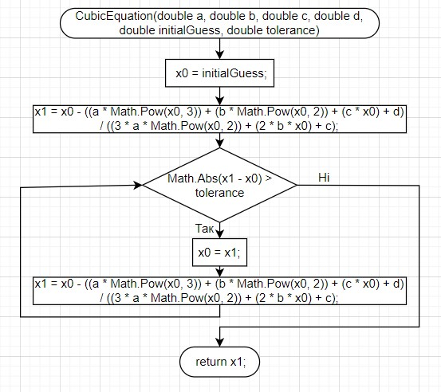
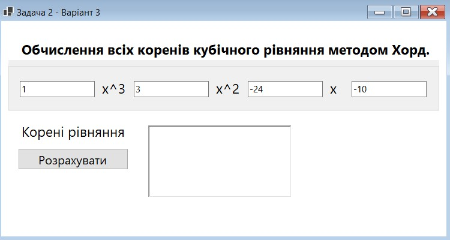

Завдання 2 Практика
Для реалізації було обрано мову програмування C# та середовище розробки Visual studio.
На основі теоретичної інформації було виконано реалізацію чисельного методу для вирішення кубічних рівнянь методом хорд.
Цей метод приймає коефіцієнти a, b, c, d кубічного рівняння, початкове наближення initialGuess та точність tolerance. Та повертає наближений корінь рівняння.
Далі наведено алгоритм розв’язання задачі у вигляді блок-схеми.

Далі було розроблено інтерфейс користувача для взаємодії з програмою.
Інтерфейс складається з полів для вводу та виводу даних та кнопок.

Далі було реалізовано метод хорд засобами програмування scilab та перевірено правильність отриманих програмою рішень за допомогою чисельного методу аналогічного тому, що розроблено в C#;
function x = solveCubicEquation(a, b, c, d, initialGuess, tolerance)
x0 = initialGuess;
x1 = x0 - (evaluateCubicEquation(a, b, c, d, x0) / evaluateCubicEquationDerivative(a, b, c, d, x0));
while abs(x1 - x0) > tolerance
x0 = x1;
x1 = x0 - (evaluateCubicEquation(a, b, c, d, x0) / evaluateCubicEquationDerivative(a, b, c, d, x0));
end
x = x1;
endfunction
function y = evaluateCubicEquation(a, b, c, d, x)
y = (a * x^3) + (b * x^2) + (c * x) + d;
endfunction
function y = evaluateCubicEquationDerivative(a, b, c, d, x)
y = (3 * a * x^2) + (2 * b * x) + c;
endfunction
// Приклад використання:
a = 1.0;
b = 3.0;
c = -24.0;
d = -10.0;
tolerance = 0.000001;
root1 = solveCubicEquation(a, b, c, d, -10, tolerance);
root2 = solveCubicEquation(a, b, c, d, 0, tolerance);
root3 = solveCubicEquation(a, b, c, d, 10, tolerance);
disp("Виконано реалізацію чисельного методу засобами програмування Scilab");
disp("Root: x1=" + string(root1)+" x2="+ string(root2)+" x3="+ string(root3));
Перевірка за допомогою fsolve – стандартної команди scilab.
disp("Перевірка за допомогою solve");
function y = f(x)
y = x^3 + 3*x^2 - 24*x - 10;
endfunction
x = linspace(-10, 10, 3);
y = f(x);
tol = 1e-6; // допустима похибка
roots = fsolve(x, f, tol);
disp(roots);
x = linspace(-10, 10, 1000);
y = f(x);
plot2d(x, y);
xgrid();
xtitle('x');
title('Графік функції f(x)');